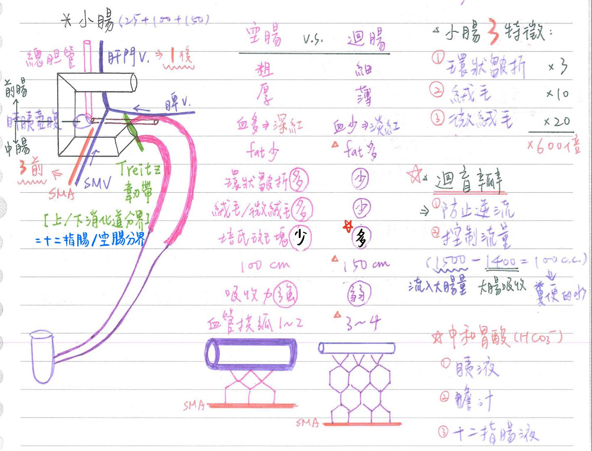
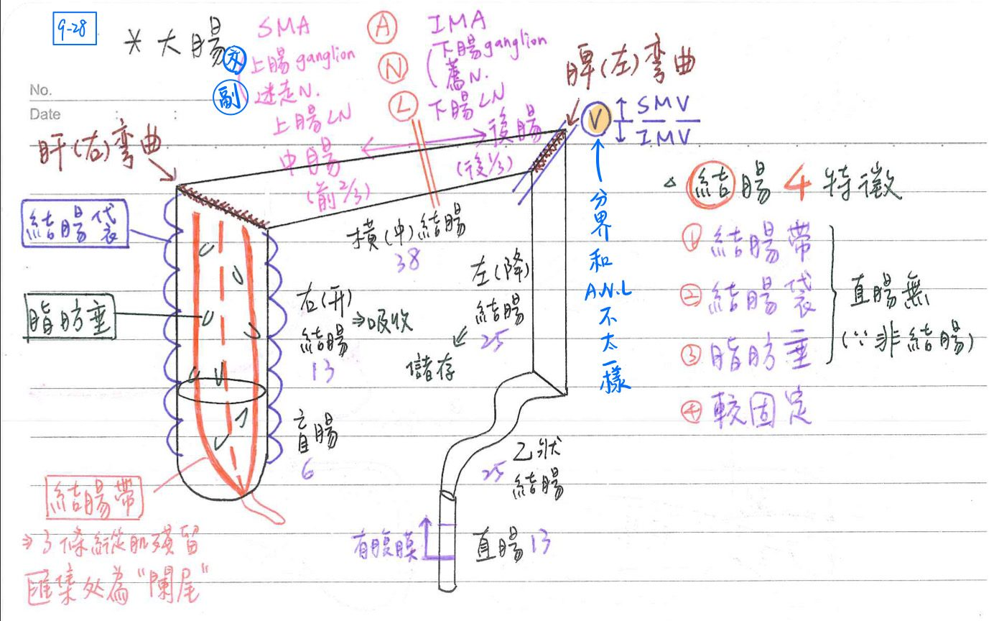
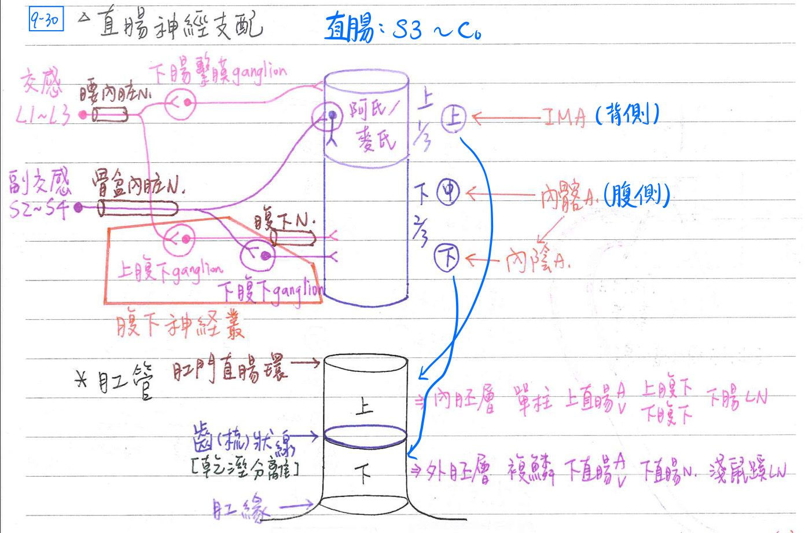
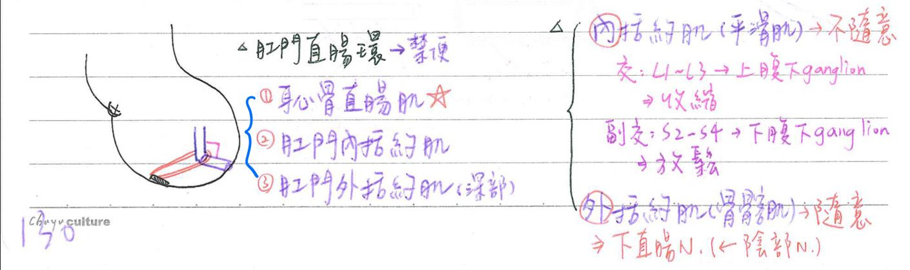

🤮 消化系統-小腸、大腸、肛管
💡
看圖+表格抓重點
小腸(small intestine)
- 正常長度： (十二指腸)25cm+(空腸)250→(迴腸)350cm=625
- 小腸正常約有6-7公尺長
界標
- 十二指腸/空腸的交界：Treitz韌帶
- Treitz韌帶=十二指腸懸肌(Suspensory muscle of duodenum)：★[110-2]由橫膈肌形成
- 上、下消化道之分界
- 連接橫膈右腳與十二指腸空腸彎曲(duodenojejunal flexure)
- Treitz韌帶=十二指腸懸肌(Suspensory muscle of duodenum)：★[110-2]由橫膈肌形成
- 空腸/迴腸：無明顯界線
小腸的特徴
- 環狀皺折(plicae circulares=Kerckring valve)：增加3倍吸收表面積
- 絨毛(villi)：增加10倍吸收表面積
- 微绒毛(microvilli)=刷緣(brush border)：增加20倍
- 以上均為永久性結構，不會因管壁膨脹而消失→共增加600倍吸收表面積
- 黏膜層之固有層：特具淋巴小結聚集而成之培氏斑塊(Peyer patch)[迴腸為主]
- 培氏斑塊(Peyer patch)：位於黏膜(固有)層&黏膜下層

十二指腸(duodenum)
- 呈C環；共25cm
- 分成水平上部(1st)、降部(2nd)、水平下部(3rd)、升部(4th)等四部份
- 1st部(superior part)：2英时(5cm)；位於跨幽門橫線(transpyloric line, L1)的高度
- ★2nd部(descending part)：3英时(7.5cm)；位於右腎門内側；肝胰壺腹注入
- 3rd部(horizontal part)：3英时(7.5cm)；位於肋下平面(subcostal plane, L3)的高度
- 4th部(ascending part)：2英时(5cm)；Treitz韌帶將其固定在右橫膈腳
- 上腸繫膜A：跨越第3部份腹側(SMA與主動脈夾角37度)
- 肝門V & 總膽管：途經第1部份之背側
- 十二脂腸血液供應：
- 上1/2(前腸)：上十二指腸A←胃十二指腸A←總肝A←腔動脈幹
- 下1/2(中腸)：下十二指腸A←上腸繋膜A
- 淋巴：[跟動脈供應的主幹相同]
- 上1/2：腔淋巴結(celiac node)
- 下1/2：上腸繫膜淋巴結(sup.mesentericnode)
- 腺體：
- 小腸腺=李氏腺(Lieberkuhn's gland)：
- 單式管腺型腺體 <cf>胃腺、小腸腺、汗腺都是
- 位於十二指腸、空腸、迴腸之黏膜層；(大腸/直腸也有 by wiki)
- 能分泌消化酶(雙糖、胜肽酶、核酸酶等)
- 布路納氏腺(Brunner’s gland)：無消化酶
- 複式腺泡型(有分岔)
- [重點]位於十二指腸之黏膜下層
- ★[109-2]部分Brunner’s gland會延伸到 mucosa→導致十二指腸黏膜肌層不連續
- 能分泌含HC03-的鹼性黏液→中和來自胃的酸性食糜
- 小腸腺=李氏腺(Lieberkuhn's gland)：
空腸(jejunum)與迴腸(ileum)之比較 [前後順序：空手而回]
| 特性 | 空腸 | 迴腸 |
|---|---|---|
| 1. 管徑 | 粗 | 細 |
| 2.管壁 | 厚 | 薄 |
| 3. 血管供應 | 多 | 少 |
| 4. 顏色 | 深紅 | 淡紅 |
| 5. 外圍脂肪 | 少 | 多 |
| 6. 環狀皺折 | 多 | 少 |
| 7. 纖毛(單層柱狀epi.) | 多 | 少 |
| 8. 微絨毛 | 多 | 少 |
| 9. ★[108-2]培氏斑塊 | 少 | 多 |
| 10. 長度(cm) | 100~250 | 150~350 |
| 11. 位置 | 左上方 | 右下方 |
| 12. 吸收力 | 較強 | 較弱 |
| 13. 血管拱弧(arcade) | 1~2 | 3~4(多) |
| 14. 杯細胞 | 少 | 多 |
迴盲辦(ileocecal valve)-功能
- 防止逆流(主要功能；約50~60cmH2O)
- 控制流量：流入大腸量約1500c.c./天
- 大腸約吸收1400c/天；大便含水量：100c.c/天
闌尾(appendix)：長度約6~9cm
- 為盲腸之突出憩室；結構與大腸相似
- 具★單層柱狀上皮、內環外縱之平滑肌等
- 腺體較少、短
- 黏膜下層淋巴小結較多
- 無結腸帶構造
- 位置：
- 底(base)=迴腸盲腸交界處；3條結腸帶(taeniae)匯集處
- McBurneypoint(1889)=髂骨前上棘至肚臍連線之外1/3
- 頂(tip)
- 65%盲腸後(retrocecal)
- 30%骨盆腔(pelvic)
- 2% 後腹膜(retroperitoneal)
- 底(base)=迴腸盲腸交界處；3條結腸帶(taeniae)匯集處
小腸黏膜細胞 ★[109-2][沒有surface mucous cell！]
- 腸細胞(enterocyte)：吸收
- 杯細胞(goblet cell)：分泌黏液
- 潘氏細胞(Paneth cell)：殺菌，分泌★溶菌酶(lysozyme)
- 位於小腸腺底部，存在於★★[107-2]小腸
、結腸等；尤以十二指腸最多備註
結腸正常來說沒有Paneth cell
- 位於小腸腺底部，存在於★★[107-2]小腸
- M cell(microfold)：殺菌；位於Peyer patches 上方
- 基底側之細胞膜具向內凹陷(basal membrane invagination)，形成凹坑(pit)
- 坑内聚集巴球&巨噬細胞；M cell下方之基底膜不連續
→故M cell靠胞攝作用(endocytosis)將腸腔中細菌移給其下方之淋巴球&巨噬細胞，以利其殺菌
- 腸內分泌細胞(enteroendocrine cell)：
I cell：CCK-PZ S cell：secretin K cell：GIP D1：VIP D cell：somatostatin Mo cell：motilin EC cell：5-HT、P物質 G cell：gastrin L cell：glucagon-like substance
(glicetin)
大腸(large intestine)
大腸-特徵
- 結腸帶(taenia)：3條縱肌殘留，匯集處為闌尾(appendix)
- 為手術時辨識大腸的最重要特徵
- 結腸袋(haustra)：因結腸帶比結腸管較短造成
- 脂肪垂(epiploic appendages)
- 較固定(如升結腸、降結腸為後腹膜器官)
- 直腸：不具結腸帶、不具結腸袋、亦不具脂肪垂
大腸-長度：120cm
- 升結腸=13cm
- 盲腸=6cm
- 乙狀結腸=25cm；若長期便祕可能加長
- 降結腸=25cm
- 橫結腸=38cm
- 升結腸(=右結腸)&橫結腸(=中結腸)之交界：結腸肝(右)彎曲
- 橫結腸&降結腸的交界：結腸脾(左)彎曲
大腸-胚胎發育
- 中腸：盲腸、升結腸、橫結腸前2/3
- 上腸繫膜A、淋巴結、神經節&迷走N支配
- 後腸：橫結腸後1/3、降結腸、S形(乙狀)結腸、直腸
- 下腸繫膜A、淋巴結、神經節&薦N、骨盆內臓N(←薦N)支配
- 上腸繫膜V&下腸繫膜V之分界：結腸脾彎曲
- SMA & IMA之吻合：
- arc of Riolan = meandering mesenteric a.
- marginal a. of Drummond→ vasa recta

大腸-淋巴結分階(level)
- 結腸上淋巴結(epicolic)：沿直血管(vasa recta)
- 結腸旁淋巴結(paracolic)：沿邊緣動脈(marginal a.)
- 中介淋巴結(intermcdiate)：沿SMA & IMA 之主要分枝
( ileocolic a 、 right colic a 、 middle colic a / left colic a 、 sigmoid a 、superior rectal a ) - 主淋巴結(principle/main)：沿SMA & IMA 之主幹
左、右結腸之差異
| 直徑 | 動脈供應 | 功能 | 糞便型態 | 神經支配(交感) | 神經支配(副交感) | |
|---|---|---|---|---|---|---|
| 右結腸 | 較大(盲腸9cm) | SMA | 水及電解質吸收 | (半)液態糞 | 上腸繫膜神經節 | 迷走N |
| 左結腸 | 較小(直腸2.5cm) | IMA | 儲存、排遺 | (半)固態糞 | 下腸繫膜神經節 | 骨盆N |
直腸(rectum)
- 位置：★S3~Co(尾椎)
- 長度：約13cm(5英吋)
- 腹膜相關性：
- 上1/3：前方&兩側具腹膜覆蓋
- 中1/3：僅前方具腹膜覆蓋
- 下1/3：無腹膜覆蓋
- 具三橫走皺壁(semicircular fold=Houston’s valve)：左、右、左
- 不具結腸帶、不形成結腸袋、亦無腸脂垂
- 三結腸带匯集成直腸前、後兩處寬帶
- 直腸旁筋膜(pararectal fascia)：由前至後依序為
- Denonvillier fascia：分隔前列腺(男)/陰道(女)與直腸
- 主要筋膜(fascia propria)=包覆筋膜(investing fascia)：包圍直腸
- Waldeyer fascia =直腸薦椎筋膜(rectosacral)：位於主要筋膜、薦椎前筋膜之間
- 薦椎前筋膜(presacral)：分隔直腸與薦椎前靜脈叢(venous plexus)
- 直腸癌手術，剝離應沿Waldeyer fascia
- 若損及後方薦椎前筋膜→易造成大出血
- 若損及前方主要筋膜→易造成腫瘤復發
- 血管：
- 上1/3：上直腸A←下腸繫膜A(IMA)
- 上直腸A從直腸背面供應
- 中1/3：中直腸A←内髂A
- 中、下直腸A從直腸腹面供應
- 下1/3：下直腸A←內陰A
- 內陰A為內髂A之分枝
- 上1/3：上直腸A←下腸繫膜A(IMA)

- 神經：
- 副交感：S2~4→阿氏、麥氏神經叢 or 下腹下神經節
- 節前神經纖維途經骨盆內臓N
- 交感：L1~2→下腸繫膜神經節or上腹下神經節
- 節後神經纖維途經腹下N(hypogastic n.)
- 腹下神經節及其相關神經纖維構成腹下神經叢(hypogastric plexus)
- 副交感：S2~4→阿氏、麥氏神經叢 or 下腹下神經節
- 淋巴引流：直腸旁淋巴腺(pararectal node)→
- 上1/3：隨上直腸A至下腸繫膜淋巴結
- 下2/3：隨中直腸A至內骼淋巴結
直腸、肛管摘要
| A/V | LN | 交感 | 副交感 | 胚層 | 上皮 | |
|---|---|---|---|---|---|---|
| 直腸上1/3 | 上直腸←IMA | 下腸繋膜 | 下腸繋膜神經節 | Ar / Ms | 內胚層 | 單/柱 |
| 直腸中1/3 | 中直腸←內髂A | 內髂 | 上腹下神經節→腹下N | 骨盆內臓N→下腹下 | 內胚層 | 單/柱 |
| 直腸下1/3 | 下直腸←內陰A | 內髂 | 上腹下神經節→腹下N | 骨盆內臓N→下腹下 | 內胚層 | 單/柱 |
| 肛管上2/3 | 上直腸A←IMA | 下腸繁膜 | 上腹下神經節→腹下N | 骨盆內臓N→下腹下 | 內胚層 | 單/柱 |
| 肛管下1/3 | 下直腸A←內陰A | 淺鼠蹊* | 下直腸N←陰部N | 下直腸N←陰部N | 外胚層 | 複/鱗 |
肛管(anal canal)
肛管-構造
- 自肛管直腸環~肛緣(肛門)；長度約4公分
- 上界= 肛管直腸環(anorectal ring)=肛管直腸交界(anorectal junction)：
- 其上為直腸，其下為肛管；外圍具恥骨直腸肌形成之肛管直腸吊環
- 中線=齒狀線(dentate line)=★[109-2]梳狀線(pectinate line)
- 黏膜及表皮的交界線(mucocutancous line)：乾/濕分離的交界線
→其上為黏膜性肛管；其下為表皮性肛管 - 胚胎期：內胚層(endoderm)之後腸(hingut)&外胚層(ectoderm)之肛凹/原肛(anal pit/proctodeum)的交界處(泄殖腔膜)
- 黏膜及表皮的交界線(mucocutancous line)：乾/濕分離的交界線
- 白線(white line of Hilton)=擴約肌間溝(intersphincteric groove)
- 位於內擴約肌之下線，齒狀線(梳狀線)之下方(遠端)
- 其上為肛管過渡區(analtransitional zone)：具類似皮膚構造
- 其下為肛管皮膚區(anal cutaneous zone)：具真性皮膚構造
- 下界=肛緣(anal verge)=肛門(anus)：肛管與會陰皮膚之交界線
| [重點] | 肛管上2/3(25mm) | 肛管下1/3(15mm) |
|---|---|---|
| 1. 胚胎來源 | 後腸(內胚層) | 肛凹(外胚層) |
| 2.內襯上皮 | 單層柱狀 | ★[108-1]複層鱗狀 |
| 3. 營養血管 | 上直腸A/V | 下直腸A/V |
| 4. 支配神經 | 腹下神經叢 內臓N | 下直腸N 體N |
| 5. 淋巴引流 | 下腸繋膜淋巴結 | [重點]★[109-2]淺鼠蹊淋巴結 (不是血管到内骼淋巴結) |
肛管上段=黏膜性肛管
- 源自後腸(內胚層)、對疼痛不敏感
- 內襯上皮：為單層柱狀上皮；具杯細胞(goblet cell)
- 黏膜層：具肛柱、肛竇、肛瓣、肛腺等
- 肛柱(anal column of Morgagni)=黏膜層之縱走性隆起(6~10條)
- 肛竇(sinus)=肛隱窩(crypt)：肛柱之間；黏膜層之縱走性凹溝
- 肛瓣(valve)：連結肛柱下緣之横走性隆起，其構成齒狀線
- 肛腺(anal gland)：分泌黏液，開口於肛竇，可位於黏膜下層或更深層
→若感染可造成肛圍膿瘍、肛管皮膚廔管等
- 血管供應：上直腸A/V
- 內痔(internal hemorrhoid)：黏膜下層之靜脈曲張
- 淋巴引流：至下腸繫膜淋巴結
- 神經支配：腹下神經叢(hypogastric plexus)/內臓N
- 副交感：S2~S4→下腹下神經節(inf. hypogastric)
- 節前神經纖維途經骨盆內臓N(pelvic splanchnic n.)
- 交感：L1~L2→上腹下神經節(sup. hypogastric)
- 節後神經纖維途經腹下N(hypogastic n)
- 腹下神經節及其相關神經纖維構成腹下神經叢(hypogastric plexus)
- 副交感：S2~S4→下腹下神經節(inf. hypogastric)
肛管下段=表皮性肛管
- 源自肛門凹(外胚層)、對疼痛敏感
- 內襯上皮為複層鱗狀上皮，再以白線(whiteline of Hilton)為界：
- 其上為肛管過渡區(transitional zone)：具類似皮膚構造
=管疏狀區(anal pecten)=肛管表皮(anoderm)- 但無角質化(non-keratinized)，且不具汗腺、皮脂腺、毛髮等
- 其下為肛管皮膚區(anal cutaneous zone)：具真性皮膚構造
- 具一般皮膚之角質化(keratinized)、汗腺、皮脂腺、毛髮等
- 其上為肛管過渡區(transitional zone)：具類似皮膚構造
- 血管供應：下直腸A/V
- 外痔(externalhemorrhoid)：黏膜下層之靜脈曲張
- 沐巴引流：至淺鼠蹊部淋巴結
- 神經支配：下直腸N(陰部N分枝)/體N
肛門括約肌
- 內括約肌：平滑肌(環肌特化)；不隨意
- 副交感：S2~S4→下腹下神經節
- 節前神經纖維途經骨盆內臓N
- 交感：L1~L2→上腹下神經節
- 節後神經纖維途經腹下N
- 副交感：S2~S4→下腹下神經節
- 外括約肌：骨骼肌；隨意
- 下直腸N(陰部N分枝)/體N支配
- 肛門外括約肌分為深部、淺部、皮下部
- ★肛門外括約肌淺部：連接尾骨&會陰體
肛管直腸環(anorectalring)
- 肛管直腸交角(anorectal angle)：90度→135度
- 由恥骨直腸肌(提肛肌之中纖維)形成，以防糞便直達肛管
- 恥骨直腸肌：自恥骨環繞肛管直腸交界處之肌肉，將腸管向前拉
- 由恥骨直腸肌(提肛肌之中纖維)形成，以防糞便直達肛管
- 肛管直腸環(anorectalring)：肛管與直腸之交界，由3肌肉組成
- [重點]恥骨直腸肌(puborectalis)
- 肛門內括約肌(int. sphincter)
- 肛門外括約肌(深部) (deep part of ext. sphincter)

禁便(continence)
- 構成要件：
- 恥骨直腸肌(puborectalis)：
- 自恥骨環繞肛管直腸交界處之肌肉
- 平時收縮時→肛管直腸交角=90度
- 排便舒張時(or坐姿/蹲姿)→肛管直腸交角=135度
- 內括約肌：80~85%休息時壓力
- 外括約肌：15~20%休息時壓力；100%隨意排便時壓力
- 陰部N(pudendal nerve)
- 恥骨直腸肌(puborectalis)：
- 肛門直腸壓力測量(anorecta lmanometry)：
- 最大休息時壓力：40~80mmHg
- 最大隨意排便時壓力：80~160mmHg